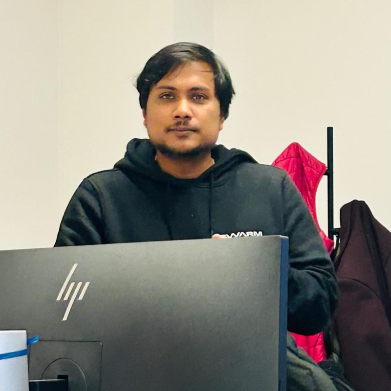

Senior Cloud Platform Engineer · AWS · Terraform
Binay Rawat
Senior DevOps & Cloud Platform Engineer
Cloud and DevOps engineer with nearly 9 years of experience designing, automating, and operating AWS infrastructure end to end. Experienced in building cloud and edge platforms for robotics startups and leading enterprise DevOps delivery across pharmaceuticals, life sciences, and multinational organizations. Focused on reliable architecture, infrastructure as code, delivery automation, and measurable operational outcomes.

// about
I am a hands-on Platform Lead and Cloud Platform Engineer with experience owning platforms from architecture through production operations. I have served as the sole platform owner at an early-stage robotics company and led enterprise-scale AWS DevOps delivery for a multi-site Fortune 500 pharmaceutical engagement. This combination of startup ownership and multinational delivery experience enables me to work effectively both independently and with distributed teams of 20+ engineers.
My focus areas include cloud architecture, infrastructure as code, CI/CD, networking, edge systems, observability, reliability, and production operations. I currently lead the rebuild of a robotics company's cloud-edge platform using AWS IoT Core, Greengrass, and MQTT, with an emphasis on resilience during network outages and reducing configuration drift through modular Terraform.
// skills
Cloud Platforms & Architecture
AWS cloud-native application patterns across serverless, containerized, and EC2-based workloads; VPC networking, ALB/NLB, Route 53, Auto Scaling, S3, multi-account strategy, AWS Control Tower, and landing zones
Infrastructure Automation
Terraform, Packer, infrastructure automation, environment provisioning
Containers & Edge Platforms
Docker, Docker Compose, AWS IoT Core, AWS Greengrass, MQTT, edge computing
Hardware & Embedded Edge
Mini PCs, Raspberry Pi, edge PC setup, TinyPICO, ESP32-S3, OctoPack, Nicla boards, device provisioning, and automated firmware flashing
Cloud Migration & Modernization
On-premises to AWS migration, Oracle database migration, AWS DMS, schema conversion, validation, RDS, and low-downtime cutover planning
CI/CD & DevOps
GitLab CI, GitHub Actions, AWS CodePipeline, Azure DevOps, Git, Python, Bash
Reliability & Operations
CloudWatch, Prometheus, Grafana, ServiceNow, SLA management, incident management, change management
Security & Identity
AWS IAM, Microsoft Entra ID, app registrations, SSO, OIDC, least-privilege access
Leadership
Platform ownership, technical leadership, stakeholder management, onshore–offshore delivery, mentoring
// experience
Senior Cloud Platform Engineer — Founding Platform Owner
Aug 2025 – PresentSWARM Biotactics · Kassel, Germany
- Sole Cloud Platform owner: lead and deliver all cloud architecture, networking, edge systems, infrastructure automation, observability, and platform operations.
- Joined at an early stage, assessed the existing architecture, and rebuilt the cloud and edge platform from scratch, including standards for deployment, reliability, and operations.
- Defined and delivered robotics cloud-edge architecture using AWS IoT Core, AWS Greengrass, and MQTT for secure device connectivity and scalable operations.
- Built resilient MQTT-to-S3 telemetry pipelines with Greengrass Stream Manager and Docker-based aggregators, including local buffering to prevent telemetry loss during network outages.
- Owned end-to-end platform enablement for the new San Diego (US) office: networking, edge PC setup, and cloud architecture for US and Germany environments.
- Established Prometheus/Grafana monitoring and modular Terraform automation to provision consistent environments quickly and reduce configuration drift.
Cloud DevOps Lead — Client: Bayer
May 2022 – Aug 2025Tata Consultancy Services · Germany / India
- Onsite Cloud DevOps Lead for Bayer, owning platform architecture, delivery leadership, and customer engagement across Wuppertal, Berlin, Leverkusen, Budapest, and additional sites.
- End-to-end accountable for Application Development (AD) and Application Management Services (AMS): requirements, architecture, implementation, production deployment, and handover to operations.
- Led AMS operations (incidents and service requests), identified customer pain points, and converted them into milestone-based AD projects with separate commercial scope.
- Ran delivery governance through Azure DevOps and ServiceNow, enforcing change management across Development, DevOps, and Operations for controlled production releases.
- Led distributed delivery through an offshore manager and 4–5 team managers, each managing teams of 5–10 engineers.
- Delivered AWS infrastructure automation with Terraform and CI/CD (GitLab CI, AWS CodePipeline); operated core AWS services against enterprise SLA targets.
- Implemented Azure AD (Entra ID) SSO and OIDC access controls for secure enterprise identity and access management.
Software Engineer — AWS DevOps
Sep 2019 – May 2022GlobalLogic · Gurugram, India
- Built and standardized CI/CD workflows with AWS CodePipeline to streamline build, test, and deployment across engineering teams.
- Provisioned and managed AWS infrastructure (EC2, VPC, IAM, S3) using Terraform, and automated immutable AMI creation with Packer.
- Set up and maintained Dev, Test, and Production environments, improving consistency and reducing manual release effort.
- Wrote Bash and Python automation scripts and improved Git/deployment practices to accelerate cloud adoption.
Analyst — Infrastructure Operations · Client: Haemonetics
Jan 2018 – Aug 2019HCL Technologies · Noida, India
- Provided end-to-end infrastructure support across cloud support, DevOps coordination, access management, and day-to-day operations.
- Handled on-call support via Avaya, resolving incidents and service requests in ServiceNow under SLA.
- Monitored system/region health using SolarWinds and supported Linux/Windows environments, networking, VM, and application issue resolution.
Industrial Trainee — Web Application Development & DevOps
Jun 2016 – Jul 2016Airports Authority of India · Delhi, India
- Contributed to the E-Visitors Application, supporting web application development and deployment for digital visitor management.
- Created and maintained a CI/CD pipeline for automated testing and deployment, and managed the Git repository for collaborative development.
- Containerized the application with Docker and gained practical experience with DevOps tools, cloud concepts, and software delivery workflows.
Internship Trainee — Android Application Development
Jul 2015 – Aug 2015Robosapiens Technologies Pvt. Ltd. · New Delhi, India
- Developed and tested Android applications using Java and the Android SDK as part of a practical industry training program.
- Built a foundation in application architecture, software development workflows, and collaborative engineering practices.
- Completed the 30-day internship with an A+ grade in association with Techniche, IIT Guwahati.
// highlights
Resilient edge telemetry pipeline
Designed an MQTT-to-S3 telemetry pipeline using Greengrass Stream Manager and Docker-based aggregators with local buffering, so device data survives network outages instead of being lost — a fix I identified and shipped proactively, not one that was requested.
From zero to production cloud platform
Assessed an early-stage company's existing architecture and rebuilt the cloud and edge platform from scratch — deployment standards, reliability practices, and operations — as the sole platform owner.
Enterprise-scale delivery leadership
Led distributed AWS DevOps delivery for Bayer across five sites, coordinating an offshore manager and 4–5 team managers overseeing 20+ engineers, while staying hands-on with Terraform, CI/CD, and Azure AD identity.
Modular, drift-resistant infrastructure
Built modular Terraform automation paired with Prometheus/Grafana monitoring to provision consistent environments quickly and cut configuration drift across US and Germany sites.
Cloud migration and governance
Supported enterprise cloud modernization through on-premises to AWS database migration, AWS DMS, schema validation, multi-account strategy, and landing-zone governance with AWS Control Tower.
Hardware provisioning and release operations
Supported end-to-end edge hardware readiness across Mini PCs, Raspberry Pi, microcontroller boards, and Nicla devices, including automated flashing, device setup, software packaging, and controlled releases to deployed environments.
See sanitized project write-ups (problem → approach → result) →
// credentials
AWS Certified Solutions Architect – Associate
Amazon Web Services
MTA: Introduction to Programming Using Python
Microsoft · Issued Jan 2021 · Credential ID CyyG-uTYE
B.Tech, Information Technology
Graphic Era University, Dehradun, India · 2013 – 2017
Recognition
TCS Xcelerate Warrior Award & On The Spot Awards · HCL Rising Star Award
// contact
Open to Senior DevOps, Cloud Platform, and SRE roles across Germany and remote-friendly teams in Europe. Best way to reach me is email.